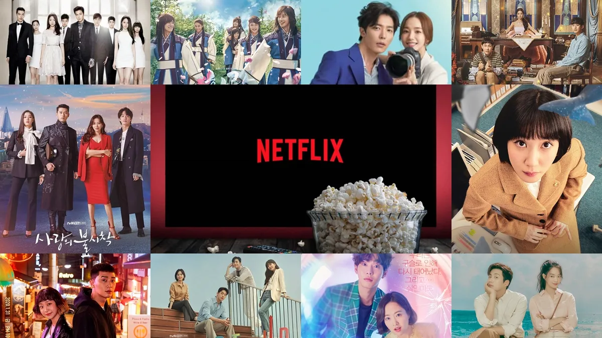
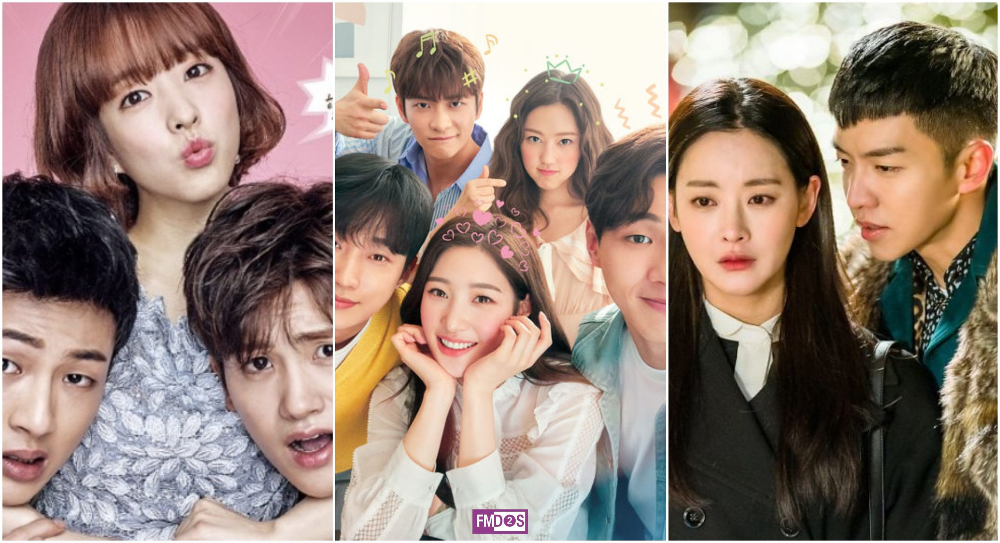
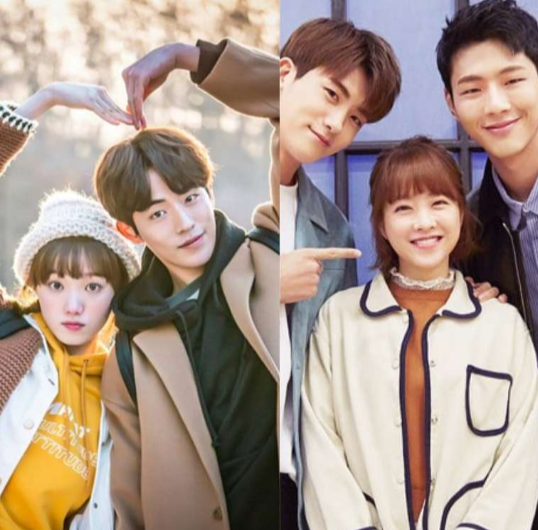
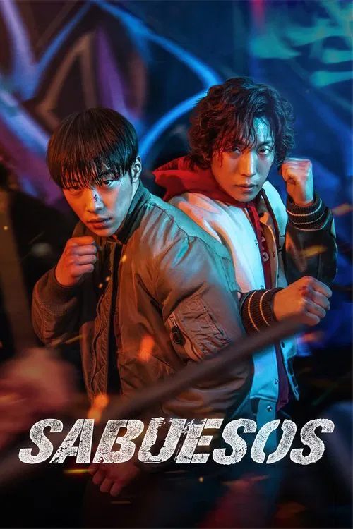
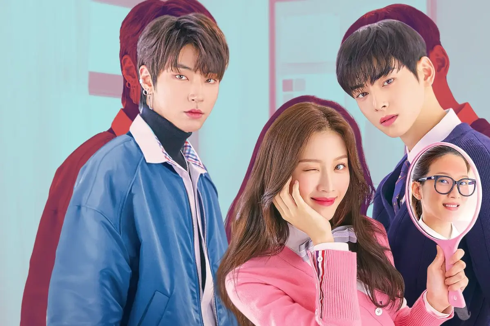
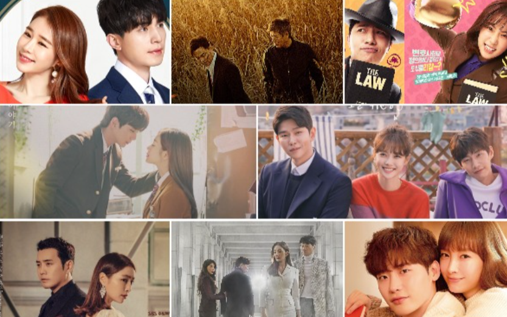

Bienvenidos al mundo de las Series Coreanas

Descubre el fenómeno mundial de Corea y la ola de entretenimiento que ha conquistado corazones en todo el planeta.
¿Qué son los K-Dramas?

Los K-Dramas son series de televisión producidas en Corea del Sur. A diferencia de las series occidentales, suelen tener una historia cerrada y constar generalmente entre 16 y 20 episodios.
Cubren una gran variedad de géneros como romance, fantasía, terror, acción y ciencia ficción.
Al igual que tramas muy interesantes y de largas temporadas, dependiendo a cada productor
Características Principales

- ✨ El drama de cada actor.
- ✨ Guiones bien estructurados y emocionales.
- ✨ Alta calidad de producción y fotografía.
- ✨ Vestuario y maquillaje impecables.
- ✨ Finales cerrados y satisfactorios.
Series Imperdibles
🔹 SABUESOS
Es una serie de acción y drama que sigue a dos jóvenes boxeadores que se unen a un prestamista benevolente para enfrentarse a un despiadado usurero.

🔹 MI ADORABLE DEMONIO
Serie que combina romance y elementos sobrenaturales, centrado en la relación entre una heredera arrogante y un demonio de 200 años que pierde sus poderes al involucrarse con ella.

🔹 BELLEZA VERDADERA
Serie que gira en torno a una estudiante de secundaria que, tras ser acosada y discriminada por ser percibida como ‹‹fea››, domina el arte del maquillaje para transformarse en una deslumbrante ‹‹diosa››.

🔹MI NOMBRE
Serie la cual trata sobre una mujer que se une a una red de crimen organizado y se infiltra en la policía como agente encubierta para descubrir la verdad sobre la muerte de su padre.

Galería Visual

La estética visual es una de las cosas que más enamora a los fans, con paisajes hermosos y tomas cinematográficas.